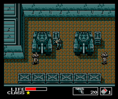
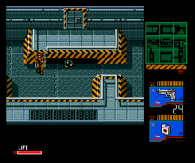
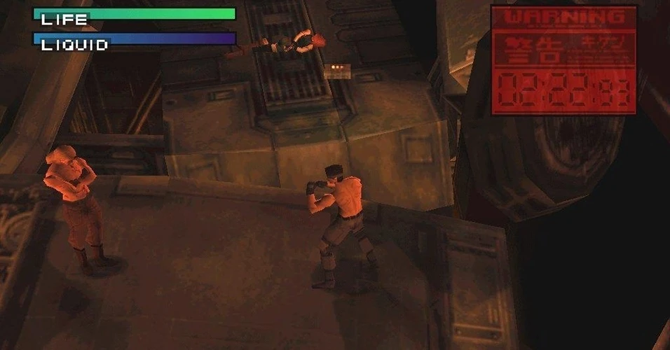
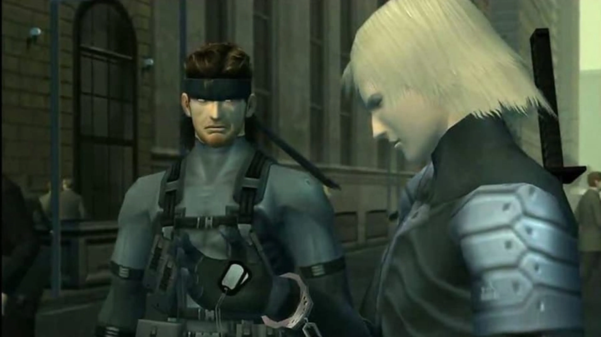
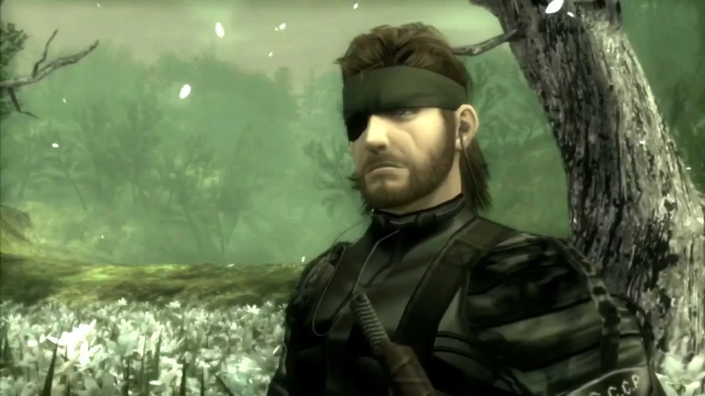
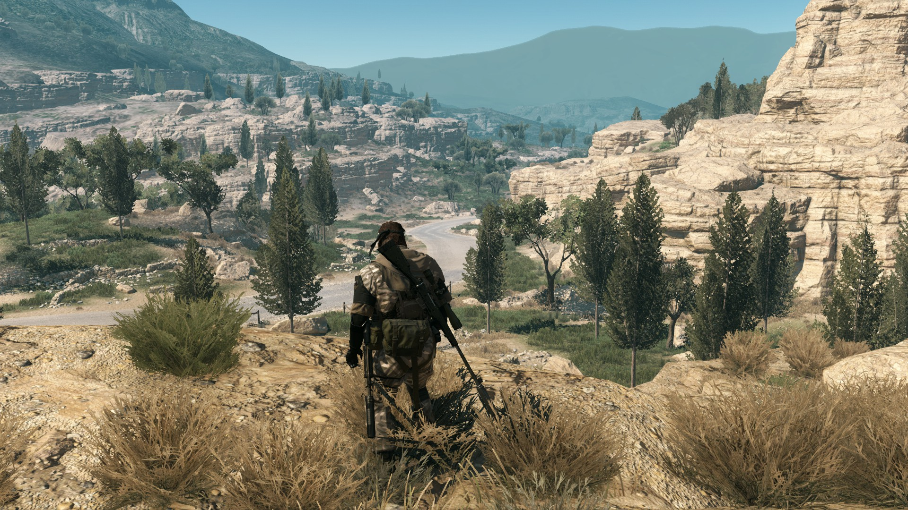

La saga de videojuegos "Metal Gear" es una obra maestra del diseñador de juegos Hideo Kojima y ha dejado una huella indeleble en la industria del videojuego desde su debut en 1987.
Siendo un pionero en el género de sigilo, además de ser juegos de acción y aventura.
La saga "Metal Gear" se destaca por sus tramas intrincadas, políticas, filosóficas y a menudo surrealistas.
La historia sigue las aventuras del legendario soldado y espía Solid Snake, así como de otros personajes notables como Big Boss y Raiden.
Temas como la proliferación nuclear, la manipulación genética, la ética en la guerra y la naturaleza de la realidad son recurrentes en toda la serie.
La jugabilidad de "Metal Gear" es conocida por combinar acción y sigilo. Los jugadores a menudo se encuentran infiltrándose en entornos hostiles,
evitando enemigos y resolviendo acertijos para avanzar en la historia. La serie es conocida por introducir elementos innovadores, como la camuflaje en "Metal Gear Solid 3" y
el enfoque en la infiltración táctica.
"Metal Gear" ha sido elogiada por su narrativa cinematográfica, personajes memorables y su capacidad para abordar temas maduros.
Hideo Kojima, el creador, ha sido reconocido como un visionario en la industria del juego.
La saga "Metal Gear" ha dejado una marca indeleble y ha influido en muchos otros juegos, estableciendo estándares para la narrativa en los videojuegos y elevando el género de sigilo a nuevas alturas.
Aunque Hideo Kojima dejó Konami y la saga tuvo un punto culminante con "The Phantom Pain", sigue siendo recordada como una de las sagas más influyentes en la historia de los videojuegos.
Metal Gear (1987): Este es el juego original que estableció las bases de la serie. Fue lanzado para MSX2 y más tarde para NES.
El jugador controla a Solid Snake, quien debe infiltrarse en la base de Outer Heaven para detener la amenaza de Metal Gear.

Metal Gear 2: Solid Snake (1990): Continuando la historia del primer juego, "Metal Gear 2" ve a Solid Snake infiltrándose en Zanzibar Land para enfrentarse a una nueva amenaza de Metal Gear.
Este juego introdujo muchas de las mecánicas y elementos narrativos que se convertirían en características de la serie.

Metal Gear Solid (1998): Metal Gear Solid (1998): Este título, lanzado para la PlayStation original, marcó la transición a la tercera dimensión y llevó la narrativa del juego a nuevos niveles.
Dirigido por Hideo Kojima, sigue a Solid Snake mientras se infiltra en la isla nuclear de Shadow Moses para detener una crisis terrorista liderada por Liquid Snake.

Metal Gear Solid 2: Sons of Liberty (2001): Este juego introduce a un nuevo protagonista, Raiden, mientras intenta detener un complot que involucra la creación de un nuevo Metal Gear.
La narrativa compleja y la habilidad de jugar con diferentes personajes fueron innovaciones destacadas.

Metal Gear Solid 3: Snake Eater (2004): Ambientado en la Guerra Fría, este juego retrocede en el tiempo y sigue la historia de Big Boss, el mentor de Solid Snake.
Presenta elementos de supervivencia, como la caza y la curación, y explora la relación entre los personajes.

Metal Gear Solid 4: Guns of the Patriots (2008): Concluyendo la historia de Solid Snake, este juego tiene lugar en un mundo donde las guerras son luchadas por PMC (Compañías Militares Privadas).
La narrativa resuelve muchos de los misterios de la saga.
Metal Gear Solid V: Ground Zeroes (2014) y The Phantom Pain (2015): Estos dos juegos se lanzaron como partes de una sola experiencia.
"Ground Zeroes" sirve como prólogo, mientras que "The Phantom Pain" presenta un mundo abierto y sigue la historia de Big Boss. Es conocido por su libertad de enfoque y narrativa no lineal.

Estos son solo algunos de los títulos principales de la saga "Metal Gear". Hay otros juegos, spin-offs y expansiones que contribuyen a la rica historia y legado de la serie.
La complejidad narrativa, los personajes memorables y la innovación en mecánicas de juego son características distintivas de la saga.
¿Haz jugado algún juego de esta saga?
Metal Gear
Metal Gear 2: Solid Snake
Metal Gear Solid
Metal Gear Solid 2: Sons of Liberty
Metal Gear Solid 3: Snake Eater
Metal Gear Solid 4: Guns of the Patriots
Metal Gear Solid V: Ground Zeroes/The Phantom Pain
Algún otro juego de esta saga